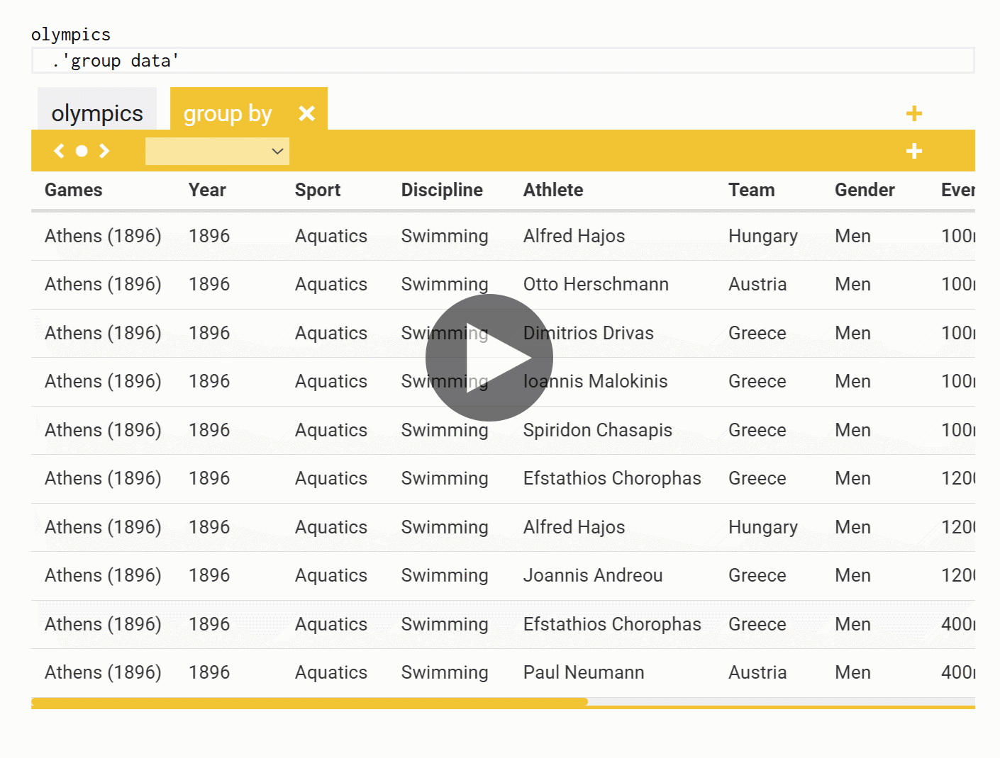
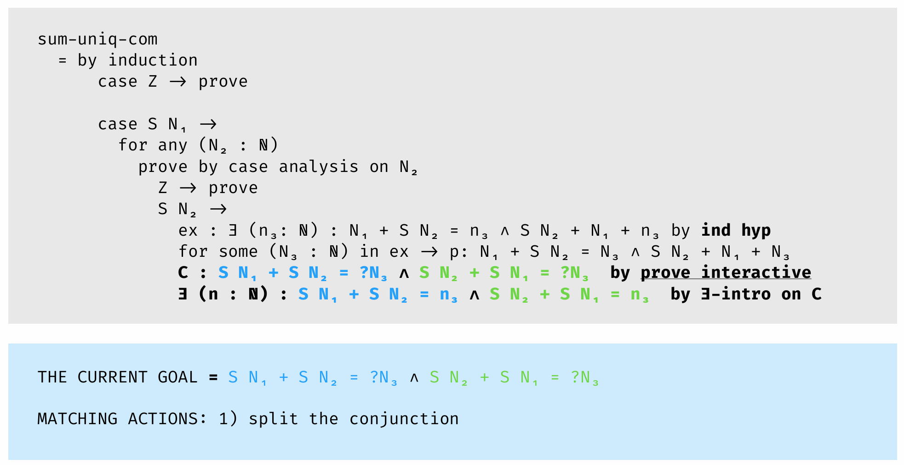

Choose Your Own Adventure Calculus
The rule of three suggests that if you encounter the same pattern for the third time in your code, you should refactor it into a reusable abstraction. The same thing applies in programming language theory. When you find that you are doing the same thing for the third time, it is probably a good idea to stop and think - is there a general pattern?

Figure 1. Auto-completion list showing possible operations in The Gamma
In my PhD thesis on context-aware computations, I did exactly this. When we realised that liveness analysis, resource tracking and checking of data-flow computations all require type system with similar structure, we came up with the idea of coeffects, which is an abstraction that can capture all three (and so, you only need to add one mechanism for tracking context into your language).
Recently, the same thing happened to me again. A lot of my work has been around interaction with programming systems. I am interested in looking not just at the programming languages, but also the stateful, interactive systems they are part of - and how programs are created through interactive editor tools, gradually revised in notebook systems or how proofs are created in interactive proof assistants. And interestingly, in three recent collaborations around those ideas, we ended up finding a very similar pattern.
In multiple different systems, we encountered a pattern where the programming system iteratively offers the user (programmer, data scientist, proof theoretician) a choice of options that the user can choose from to construct or refine their program (see Figure 1). In all systems, the user can also edit the code in other ways, but a lot (sometimes everything!) can be done just by choosing options.
I now have three examples, so it is time to describe the general pattern. Earlier, we called this (jokingly) dot-driven development, (seriously) AI assistants and (foolishly) iterative prompting. For the lack of a better name, I will refer to the abstraction as the choose-your-own-adventure calculus.
Interested? I'm looking for PhD students and post-docs to join our research group at Charles University in Prague. See PhD applications or get in touch at tomas@tomasp.net.
The three examples
I'll start by going through the three specific instances of the interaction pattern, starting from data exploration (using a type provider) and data wrangling to the most example, which we encountered in work on interactive theorem proving.
Data exploration in The Gamma
F# type providers are a mechanism that lets you integrate external data sources into the F# type system. Type providers generate types behind the scenes, based on some external schema or sample, and you can then access data using the generated types. Often, this involves typing "." to see what is available in the data source. For example, if you are reading a JSON using the F# Data library, you will be navigating through nested records using a series of "." (Phil Trelford is to blame for the term dot-driven development that we sometimes jokingly used for this and I borrowed the Choose Your Own Adventure reference from the infamous Choose Your Own Adventure Type Provider).
When working on F# Data, it occurred to me that you could use the same style of working not just for navigation through data sources, but also for constructing queries. The result was The Gamma, a web-based tool that lets you explore data using type providers and is designed to be used by non-programmers (like journalists). In The Gamma, you can write SQL-like queries just by typing "." and choosing one of the offered options (Figure 2).
Figure 2. Aggregating Olympic medal data using The Gamma type provider (click to play).
I've written about TheGamma and how it lets non-programmers construct code already, so I will not go into the details here. The type provider that is used in the example keeps track of the current schema of the data and generates types that let you construct operations that make sense based on the structure of the data. This is done lazily, because the structure is potentially infinite.
The system also generates a live preview (which is computed efficiently) and the operations users can choose from the auto-completion can also be sometimes constructed by interacting with the live preview. For example, when constructing the aggregation operation, the drop-down can be used to select the key and the "+" button on the right lets you add aggregations.
But the key point is the interaction pattern. You start with an empty query and you repeatedly choose one item from the auto-complete list to construct an entire program.
Cleaning data with AI assistants
The second instance of the interaction pattern comes from the AI for Data Analytics project that I was involved with at The Alan Turing Institute. As part of the project, a number of colleagues created various automatic AI-based data cleaning tools, such as datadiff that merges CSV files in mismatching formats or CleverCSV that infers CSV file format parameters. All of these worked in something like 80-95% cases, but in the remaining case, they needed some hint from the user. This was typically done by tweaking some parameters, such as increasing a weight or disabling some part of the logic - a pretty fiddly interaction!
To make tweaking the results easier, we came up with an idea of turning the existing automatic tools into semi-automatic AI assistants. An AI assistant tries to solve the problem automatically and generates an initial solution, but it also generates a number of constraints that the user can choose from to adapt the initial solution. If the initial solution is not correct, the user chooses a constraint and the AI assistant runs again, respecting the constraint. After adding one or two constraints, you get the right result.
The Figure 3 shows an example. It uses the datadiff AI assistant (running
inside Wrattler) to merge broadband quality data published by
Ofcom for
two different years. Alas, the format of the CSV has changed between the years - some columns
were added, some removed, all were renamed and their order has changed. Here, I selected a few
columns in a data frame called bb15nice (year 2015) and I want to add data from bb14 (year 2014).
Figure 3. Merging data files using the datadiff AI assistant (click to play).
When the AI assistant runs automatically, it decides to map the Urban.rural column in the 2014
data set to the Nation column in 2015. This happens because they are both categorical, have
three values (Scotland, England, Wales vs. Urban, Rural, Semi-urban) and have a similar
distribution of the values. But a data analyst can quickly see this is wrong. So, we click on the
"+" button to add a constraint and specify that the two columns should not be matched. Datadiff
then runs again and finds the correct matching.
The interaction pattern is exactly the same as before! We construct the correct data transformation by repeatedly choosing from a list of options, until we obtain the result that we wanted. However, things work a bit differently behind the scenes. First, in the case of The Gamma, we are constructing a program (adding operations to a method chain). Here, we are collecting constraints and the AI assistant then synthesizes a data transformation based on those constraints. Second, in the case of The Gamma, the completion list offered all possible members. Here, it offers choice of constraints that are recommended by the AI assistant. The assistant also sorts those by how likely it thinks they are. In some cases, however, it may not be able to generate all possible constraints.
Mixed-initiative proof assistant
Finally, the third example of the very same interaction pattern comes from our recent early work with Jan Liam Verter on mixed-initiative interactive proof assistants for PLT. When constructing a proof about programming language theory, you typically state the property and then develop the proof manually, until an automatic strategy can fill the remaining gaps. We wanted to try something different. The idea of mixed-initiative is that the automatic search could do a bit of work, but when it gets stuck, it would ask the user for instructions what to do next. Given that PLT proofs often have a fairly typical structure, this approach may be able to eliminate a lot of the basic tedious steps and let the proof author only step in to provide interesting insight when it is needed.
So far, we only have a basic prototype, but you can get some idea of how this might work from the HATRA paper. The following slide from Jan's presentation illustrates how the interaction may look like. In Figure 4, we are trying to prove that addition (in Peano arithmetic) is commutative. That is, show that \(\forall n_1,\! n_2,\, \exists n_3\, .\, n_1\!+\!n_2\!=\!n_3 \wedge n_2\!+\!n_1\!=\!n_3\). The assistant automatically figured out how to prove the zero cases, but then it got stuck. We manually wrote the two lines instructing it to use the induction hypothesis. Now, we need to prove the equality and we invoked the "interactive mode" where the assistant offers us options of what we can do and we can then select them. In the example, we only get one offered option, which is to split the conjunction into two goals.
Figure 4. Interacting with a (hypothetical) mixed-initiative interactive theorem prover.
When discussing the next steps for the project, it occurred to us that the example also hints at the pattern we've seen earlier. We do not yet have an implementation, but one can imagine how the interaction would look.
Let's say that we have some part of the proof (like above) and are in one of the branches. The branch contains some kind of hole - representing the fact that we do not yet have a proof for it. A proof assistant could suggest various things we may want to do. We can split the conjunction (create a tuple from two values), apply some earlier theorem or a lemma (call a function), use an induction hypothesis (recursive call) or do a few other things (although we imagine more human-readable suggestions, there is a similarity with tactic-based theorem prover inside Idris).
An interactive theorem prover could be fully build around this pattern. You start with an empty proof, the prover gives you a list of options to choose from, you choose one and a step of the proof is added. You now have multiple holes to fill and use the same process iteratively until the proof is complete.
This way, the system would be fully manual. You just choose options rather than typing the code (or issuing the commands). But the example also suggests how automation can be integrated with the interaction pattern. Rather than letting you choose in every step, a semi-automatic theorem prover could try choosing the best option itself - and keep searching through the offered options to see if it can find a proof (or a part of it). This is just the same interaction mode, except sometimes, the computer can make the choices for you!
Formalising the interaction pattern
In fact, the formal model that I call the choose-your-own-adventure calculus is already (pretty much) included in the AI assistants paper as the definition of AI assistant. The definition is written using a language specific for the data wrangling domain (it talks about input and output data, and the best cleaning script), but it is very close to what we need to describe all the other examples. Here, I will slightly simplify it and rewrite it using a more general terminology.
Now, I'm not sure if the term calculus is quite right here. I'm using it in the very broad sense as a model of a programming language "thing" that we want to be able to treat formally. But what I'm trying to define is not a model of the language, but a model of interactive systems that help programmers construct programs. Also, a calculus is typically a concrete thing - it has some expressions and reduction rules. The model I want to define is abstract. It says that any specific interactive system can be defined in terms of a certain primitive interface.
Definition. Given expressions \(e\) and states \(\sigma\), a choose-your-own-adventure (interactive programming) system is a tuple \((\sigmaN, \textit{choices}, \textit{choose})\) consisting of an initial state and two operations such that:
\[\begin{array}{rcl} \choices(\sigma) &=& (\sigma_1, \sigma_2, \ldots, \sigma_n)\\ \choose(\sigma) &=& e \end{array}\]
The formal model is extremely simple. An interactive programming system based on the calculus keeps some internal state \(\sigma\). This may contain the schema of the data table (as in The Gamma), a list of constraints (as in AI assistants) or the state of the proof. It then has to be able to do two things.
-
Given the current state, the \(\choices\) operation generates possible options to choose from. The formal model ignores the fact that the options have some textual label and simply models them as a vector of possible next states.
-
The \(\choose\) operation generates the constructed program based on the state of the interactive tool (every system state represents some program, but the system may need to keep track of other things than just the source code and so we need separate system states).
Using a choose-your-own adventure system
The basic use of a choose-your-own-adventure system is inside an IDE such as the code editor in The Gamma or the Wrattler notebook system used to host AI assistants. This does not need to be a graphical environment - you could do the same on a terminal. Using the formal definition, we can describe how the IDE interaction works.
-
The editor starts with the initial state \(\sigmaN\). It generates the initial source code using \(\choose(\sigmaN)\), displays that to the user and then it generates a list of options using \(\choices(\sigmaN)\) and also shows them to the user.
-
When the user chooses an option \(\sigma'\), the system generates new version of the source code using \(\choose(\sigma')\) and also new list of choices using \(\choices(\sigma')\).
-
The process is repeated until the user accepts the generated source code, or until the returned list of options is empty.
As usual with formal models, we are ignoring some important practical details. The choose-your-own-adventure system is typically invoked with some input parameters (data source, theorem we are proving) and the user can also make various edits in the code manually and then invoke the system again or use the system to edit only part of the code. Those aspects can be captured using the basic formal model too - rather than having a single tuple, we could have a family of tuples (indexed by input parameters); rather than having an initial state, we could have a way of constructing the initial state from a location inside the current expression (when the user triggers the system).
Revisiting the examples
Before we continue, it is useful to say a bit more about the three examples. How exactly do they fit the above formal model? All three of them wrap some kind of domain-specific logic. I will not try to describe the domain-specific aspects (doing so would make this even longer), but will try to explain how this fits with the general model.
Data exploration in The Gamma
In The Gamma, the system is used to construct a query that transforms some input data. The query is a sequence of operations \(\op(p_1, \ldots, p_n)\) with some parameters. I will write \(\op(\boldsymbol{p})\) for an operation with a vector of parameters.
The available queries are generated based on the schema \(S\) of the data, so the state of the system needs to keep the current schema and the operations selected so far. The empty state starts with some given schema, but has no operations:
\[\begin{array}{rcl} \sigma &=& S, (\op_1(\boldsymbol{p_1}), \ldots, \op_n(\boldsymbol{p_n}))\\ \sigmaN &=& S, () \end{array}\]
The \(\choices\) operation in The Gamma actually lets you choose both the next operation and the parameters of the previously selected operation. I will write \(?\) for unspecified parameter. In the state \(\sigma\), the schema \(S\) now needs to represent the schema after applying all the fully-specified operations.
If the last operation has an unspecified parameter, the type provider gives us possible parameters \(p_1, p_2, \ldots\) based on the schema \(S\), operation type \(\op\) and the already known parameters \(\boldsymbol{p_n}\). We generate choices that fill the parameter. Note that if we fill the last parameter and the operation is now fully specified, we need to return the new schema \(S'\) (which the type provider knows how to compute based on the previous schema and the new operation):
\[\begin{array}{l} \choices(S, (\op_1(\boldsymbol{p_1}), \ldots, \op_n(\boldsymbol{p_n},?,\boldsymbol{p'_n}))) =\\ \quad S', (~(\op_1(\boldsymbol{p_1}), \ldots, \op_n(\boldsymbol{p_n},p_1,\boldsymbol{p'_n})),\\ \quad\quad\;\;\;\, (\op_1(\boldsymbol{p_1}), \ldots, \op_n(\boldsymbol{p_n},p_2,\boldsymbol{p'_n})), ~\ldots ~) \end{array}\]
If the last operation in the state is fully specified, the type provider offers us a choice of possible next operations. This is generated based on the schema (for example, floating window is only available if the schema contains a column representing time). We generate choices offering the possible operations \(\op', \op'', \ldots\) with all parameters unspecified (for simplicity, I assume all operations need at least one parameter):
\[\begin{array}{l} \choices(S, (\op_1(\boldsymbol{p_1}), \ldots, \op_n(\boldsymbol{p_n}))) =\\ \quad S, (~(\op_1(\boldsymbol{p_1}), \ldots, \op_n(\boldsymbol{p_n}), \op'(\boldsymbol{?})),\\ \quad\quad\;\;\, (\op_1(\boldsymbol{p_1}), \ldots, \op_n(\boldsymbol{p_n}), \op''(\boldsymbol{?})), ~\ldots ~) \end{array}\]
Finally, the \(\choose\) operation takes the state and generates an expression that applies the data transformation. In The Gamma, the type provider already knows the data source, so it also specified the input. This is only possible if all parameters are fully-specified. For simplicity, assume that we drop the last operation if it is not fully-specified. With a slight abuse of notation, say that \(f\circ g\) is a function composition and expressions can be formed by composing the primitive operations:
\[\begin{array}{l} \choose(S, (\op_1(\boldsymbol{p_1}), \ldots, \op_n(\boldsymbol{p_n}))) =\\ \quad \op_1(\boldsymbol{p_1}) \circ \ldots \circ \op_n(\boldsymbol{p_n}) \end{array}\]
The type provider behind The Gamma knows how to generate possible operations and their parameters based on the current schema of the data. We can wrap this into the unified choose-your-own-adventure calculus definition.
Cleaning data with AI assistants
The AI assistants paper contains (a variation on) the above definition, but then it points out that most AI assistants have a more specific structure. They perform statistical optimization with respect to a set of constraints specified by the user. That is, they look for an expression (cleaning script) from the set of all possible expressions that optimizes some objective function that assigns score to the expression with respect to the input data. (The assistants do not actually iterate over all expressions. They use some machine learning method to solve the problem.)
This serves as another, quite different, way of implementing the choose-your-own-adventure pattern. Now, the state \(\sigma\) consists of a set of constraints specified by the user (I write \(c\) for individual constraints and \(\boldsymbol{c}\) for the whole set). We also need to keep track of the input data \(X\) that we are cleaning, but since this does not change, I will treat \(\choose_X\) and \(\choices_X\) as families of functions, indexed by the input data.
\[\begin{array}{rcl} \sigma &=& \{ c_1, \ldots, c_n \}\\ \sigmaN &=& \emptyset \end{array}\]
It is worth noting that \(X\) can be the actual input data, but also a representative sample. This may be useful if we want to infer cleaning script based on a subset of the full data (or based on a typical input) and then run it on full input data later.
The optimization algorithm runs when we want to choose the best expression based on the specified constraints. Formally, we can write this using the \(\argmax\) operator which finds the argument value (expression) for which the given function (scoring function) is maximized. The user-specified constraints can either filter the set of possible expressions or influence the scoring function.
In the following, \(E_\boldsymbol{c}\) is the set of expressions that respect constraints \(\boldsymbol{c}\) (this is a subset of all possible expressions \(E\)) and \(Q_\boldsymbol{c}(X, e)\) is a scoring function adapted based on the constraints, which returns the score of an expression - how good \(e\) is at cleaning data \(X\).
\[\choose_X(\boldsymbol{c}) = \argmax_{e \in E_\boldsymbol{c}} Q_\boldsymbol{c}(X, e)\]
Again, it is useful to note that the actual implementations use various machine learning techniques to find the optimal expression. The second part of the problem is generating possible constraints. Here, the AI assistants typically offer the user options to block some of the inferences made by the system. For example, if datadiff decides to match two columns, it will generate a constraint to prevent their matching. It also generates constraints that force specific matching.
To implement \(\choices_X\), the optimization-based AI assistants first call \(\choose_X(\sigma)\) to get the best expression \(e\). Based on this, they generate possible constraints \(c_1, c_2, \ldots\) that the user may want to choose from (this operation is specific to the particular AI assistant). They then offer a list of constraint sets where the possible constraints are added to the previously collected set:
\[\choices_X(\boldsymbol{c}) = (\boldsymbol{c}\cup\{ c_1 \}, \boldsymbol{c}\cup\{ c_2 \}, \ldots)\]
The key logic behind AI assistant is the argument optimization function they implement (this is where interesting machine learning happens) and also the constraint generation (typically quite simple). But again, we can wrap this logic behind the choose-your-own-adventure interface!
Tactic-based theorem proving
We have not yet figured out all the details of the third example, so I will be a bit more vague (also, I do not know much about theorem proving!) I will also rely on the Curry-Howard correspondence between logical formulas and types and write my explanation in terms of types and expressions.
Let's say that we have some type (formula) \(T\) and we want to construct an expression \(e\) of the type (proof of the formula). The expression \(e\) can have some typed holes - that is, parts where we do not yet have an implementation (proof). However, the holes are typed, and so we know what remains to be implemented (sub-goals that we need to prove).
Taking inspiration from the tactic-based theorem proving in Idris, we can assume that we have a collection of tactics that can suggest different ways of filling the holes in the expression. As we may have multiple holes inside an expression, let's also say that (for simplicity) the tactics only suggest ways of filling the first hole. They will also only suggest correct ways, i.e., whatever they suggest will always be well-typed (but it may contain more holes).
Let's say that we start with an expression that is just a hole and we want to implement (prove) the following function (implication):
\[(\_ : (\alpha \rightarrow \beta) \rightarrow \alpha \rightarrow \beta)\]
Our context already contains the identity function (theorem) \(\mathit{id}\) of type \(\forall \alpha . \alpha \rightarrow \alpha\), so one way of solving the above is to use the function. Another is to construct an explicit lambdas. Two tactics could give us the following two options:
\[\begin{array}{rcl} e_1 &=& (\mathit{id} : (\alpha \rightarrow \beta) \rightarrow \alpha \rightarrow \beta)\\ e_2 &=& (\lambda f.\lambda x.\_ : (\alpha \rightarrow \beta) \rightarrow \alpha \rightarrow \beta)\\ \end{array}\]
The expression \(e_1\) contains no more holes, so it solves the problem already. The expression \(e_2\) still contains a hole, so if we choose it, we would need to run our tactics again. One of them would be possibly able to figure out that we can get the right type by generating a function application \(f~x\).
For the sake of simplicity, I'm leaving out a lot of important details that a real theorem prover would need to do. In particular, the function I wanted to prove should also be universally quantified (polymorphic) and we need to introduce the quantifiers. The \(\textit{id}\) function is also universally quantified (\(\forall \alpha.\alpha \rightarrow \alpha\)) and so we need to specify its type argument first. But the point is that this kind of system can again fit the same choose-your-own-adventure pattern!
This time, the states are the possible expressions and the initial state is a type-annotated hole (as in the above example). If we want to prove some \(\delta\), we start with \(\sigmaN = (\_ : \delta)\). The \(\choices\) operation uses the available tactics to generate possible new expressions \(e_1, e_2, \ldots\) and offers them as options to the user, while the \(\choose\) operation simply returns the expression:
\[\begin{array}{rcl} \choices(e) &=& (e_1, e_2, \ldots)\\ \choose(e) &=& e \end{array}\]
The definitions are really simple, because all the interesting logic is hidden inside the tactics that suggest possible ways of filling the holes. But we can, again, wrap the logic inside our definition.
Figure 5. Pop-up menu showing possible ways of filling a placeholder in the Alf editor (1994).
As a theorem prover (or program synthesizer), the above is fully manual. The user experience when working with the interactive system would probably be a bit like using the ALF theorem prover from 1994! We can gradually construct the expression by choosing from different options to fill the holes, but there is no automation.
However, automation is one of the interesting things we can think about in more general terms thanks to the choose-your-own-adventure calculus!
Automating program construction
Most of the discussion so far focused on manual interaction. The user of The Gamma constructs a query and the user of AI assistants chooses constraints. But the example of proof assistant suggests that, perhaps, the choices could also be made automatically by some kind of search engine (searching for a proof) or an AI recommender. I will discuss two examples of this - one using an LLM to recommend operations for The Gamma and one adding search to the proof assistant.
LLM assistant for data exploration
The nice thing about The Gamma is that it helps the user understand how the query works. If you construct it step-by-step, you have a chance to understand how it works and how exactly are the numbers calculated (for example, are we summing all medals or just gold medals?) These days, an LLM can probably construct a query in SQL or Python for you directly based on a natural language description of the query - but this may be harder to understand and check for non-programmers.
But what if we could combine the two? The idea, which my student Mikoláš Fromm explored in his fantastic Bachelor's thesis, is to use LLM not to generate code, but to make the choices. In his system, the user can specify a query over the data set in a natural language such as (using a data set on railway consumption energy):
Group data by carrier 'CDC' and show count of distinct values in each column.
The data exploration environment works almost as before. It offers the different operations to the user and the user can choose one of the options. However, it also asks LLM to recommend an option to choose and highlights that for the user. Assume we already selected the grouping operation and we now want to choose an aggregation operation. To get a recommendation from the LLM, the system uses a prompt akin to the following:
You are helping user to complete a task in an interactive programming environment. The user's query is: "Group data by carrier 'CDC' and show count of distinct values in each column."
The query built so far is:
GroupBy.Carrier.The environment offers the user possible aggregations. Choose an aggregation that the should be applied to the grouped dataset:
SumAvgConcatCountDistinctCountAllYou should answer with the number of the aggregation and no further explanation.
It takes a bit of work to get the LLM to answer with just the number, but in this case, it is fairly reliably able to recommend the option 4. The system could be fully automatic - asking the LLM repeatedly (and adding an option to stop), but we argue that semi-automatic interaction has its benefits - it guides the user through the solution, but the user still constructs the query and can verify that it is what they wanted.
Mikoláš explored the idea specifically for data exploration, but the method of using an LLM assistant can be applied generally to any tool that implements the choose-your-own-adventure pattern. That is, if we have some state \(\sigma\) and a list of options generated using \(\choices(\sigma)=(\sigma_1, \ldots, \sigma_n)\), we can ask the LLM to recommend an option to choose from. To do this, we need:
- Some way of formulating the problem we are trying to solve, like natural language description of the query we are building.
- Some way of turning \(\sigma\) into a natural language description of the current state, like a list of operations applied so far.
- And some way of briefly summarizing the options \(\sigma_1, \ldots, \sigma_n\). In practice, those will come with labels to be displayed in the auto-completion, so we can use those.
I do not think the mechanism would work well in the case of AI assistants or proof assistant, but it is quite possible that there are other instances of the choose-your-own-adventure pattern where it may be useful to invoke LLM in the same way. (Actually, in the case of datadiff, an LLM may well be able to recommend the "Don't match 'Urban.rural' and 'Nation'" based on the understanding of the name of the columns, which is something the datadiff AI assistant ignores...)
Automating proof search
There are multiple different ways of recommending or even automatically choosing options offered by the \(\choices\) operation in the choose-your-own-adventure calculus. In order to use an LLM, we needed some kind of natural language description of what we are trying to achieve and a natural language specification of the state. To search for proof terms automatically in an interactive theorem prover based on the pattern, we would instead need:
-
A way of deciding whether the current state represents the desired resulting program. In case of proof search, this is the case if there are no holes (and the program is well-typed).
-
Some kind of search strategy and a heuristic for making a choice. In the simplest case, this could follow breadth or depth-first search with some simple heuristic.
A simple strategy like the Coq auto tactic
could likely be implemented in a fairly general way for any kind of choose-your-own-adventure
system where you can decide whether the resulting program is what you wanted and where you have
some way of characterising which options are worth trying (Coq uses a hint database for this).
If we wanted to implement a more sophisticated proof search strategy that would combine forward based reasoning (generating further conclusions from the available facts) and backward reasoning (working from the desired conclusion and generating sub-goals). To do this, the search strategy would need a more detailed understanding of the system states \(\sigma\).
The idea of choose-your-own-adventure-calculus is not going to help you write a better interactive theorem prover. What it gives you is a common interface for thinking about multiple different kinds of systems and multiple different ways of automating what they do. It also makes it quite easy to imagine how those could be combined. For example, a theorem prover based on the model could combine a range of automatic and manual approaches.
It could search for proofs automatically using a simple depth-first search (like auto), use some
clever proof-specific search algorithm, or even a LLM-based approach (akin to the one for The
Gamma) - which is also a topic people are looking at.
At the same time, all of these would be integrated with the basic interactive approach - you could
write some of the proof manually, run one of those strategies, review the proof if they succeed,
but also explore the intermediate states they generate to see if any of them can be completed
using the interactive mode.
Interactive system properties
One of the interesting claims that I made about The Gamma is that the interface it offers is both correct and complete. The first means that all the programs you can construct using the interface - by repeatedly choosing from the auto-completion list - are well-typed. They may not always return useful data, but they will always run without an error. The second means that you can use the auto-completion to construct all possible programs. There are no (well-typed) programs that you cannot construct using just the completion.
Previously, I only described the properties informally, but using the choose-your-own-adventure calculus, we can describe those through formal definitions.
Definition (Correctness). Assume that \(E\) is a set of all possible expressions in a language and \(\mathcal{E}\subseteq E\) is a set of all expressions that are correct with respect to some case-specific notion of correctness (e.g. well-typed). A choose-your-own-adventure system is correct if:
\(\forall \sigma_1,\sigma_2,\ldots\) such that \(\sigma_i \in \choices(\sigma_{i-1})\) it is the case that \(\choose(\sigma_i) \in \mathcal{E}\).
That is, if we make any sequence of choices that result in intermediate states \(\sigma_1, \sigma_2, \ldots\) (starting from the intitial state \(\sigma_0\)) then the programs generated from all of those states are from the set of correct expressions. All of the three systems I talked about above satisfy this property:
-
The type provider in The Gamma offers only operations and parameters that are valid with respect to the schema of the input data. Those are then exposed via \(\choices\). A small caveat is that a program with \(?\) as parameter would be invalid - this is why \(\choose\) drops operations that are not fully specified when producing an expression.
-
The constraints generated for AI assistants are generated by a simple operation that picks constraint types and arguments from a valid set of values.
-
The program refinements that a tactic in a theorem prover generates can easily be restricted to only valid programs. Even if the tactics were more general rewriting rules that can possibly generate non-well-typed programs, we can restrict the set of options to those that type check.
In general, there may be some systems that offer incorrect options. For example, it may be useful to let the user see programs generated by a (general) proof tactic even if that does not lead to a correct answer (they may learn something and refine the proof/program). It is also possible to imagine an LLM assistant that simply returns whatever the AI algorithm generates, even if it is not fully correct (again, the user may be able to fix the result).
Regardless of whether offerring incorrect completions is useful or not, the choose-your-own-adventure calculus gives us a framework for talking about the system property! This is equally the case for the second property I mentioned above.
Definition (Completeness). Assume that \(E\) is a set of all possible expressions in a language and \(\mathcal{E}\subseteq E\) is a set of all expressions that are correct with respect to some case-specific notion of correctness (e.g. well-typed). A choose-your-own-adventure system is complete if:
\(\forall e\in \mathcal{E}.~\exists \sigma_1,\ldots,\sigma_n\) such that \(\sigma_i \in \choices(\sigma_{i-1})\) and \(e=\choose(\sigma_n)\).
That is, for any correct program, there is a sequence of choices that leads to a system state that \(\choose\) turns into the given program. This is a more subtle property that not all of my above examples have:
-
In The Gamma, the programs that can be generated are restricted - you can only use a fixed set of aggregation operations (rather than writing your own) and only a restricted set of parameters (sorting by a key, but not based on a custom expression). For those, the type provider is complete. However, if we treated a more general-purpose query language as the underlying language, the provider would not be complete.
-
In AI assistants, the system offers a set of constraints that is generated based on the selected expression, but this does not let you construct arbitrary constraints. Moreover, because the \(\choose\) operation is AI-based, it is not guaranteed that there is a way to get it to generate a specific program (unless we can supply constraints that restrict the set of programs \(E_\boldsymbol{c}\) to just a single program).
-
In interactive theorem prover, we could possibly offer all possible ways of filling a hole (up to renaming), but this would not be very practical. It is more likely that tactics will only generate a subset of valid proof/program steps and the user has to write some other steps manually.
The nice thing about the choose-your-own-adventure formalism is that it also lets us talk about (and think about!) properties that are more specifically about the user interaction with an interactive programming system.
Programming by demonstration
To give one example, consider the graphical user interface that The Gamma provides. The interface not only shows a preview of the current data (after applying all the previous transformations), but it also lets you specify the next transformation. Figure 7a and Figure 7b show two examples.
Figure 7a. Specifying sorting key in The Gamma. The GUI offers the options in a menu, but they could also appear as up/down arrows by the column names.
Figure 7b. Once we choose a group key, we only see the key and already specified aggregations. All other columns are hidden.
The two figures illustrate an interesting problem. Sometimes, there is a "natural" place in the preview to which the subsequent operations that one can choose from can be linked. When specifying the search key, the preview shows a table with all the column names. Sorting could be done by clicking on up/down arrows in the column header (The Gamma actually shows them in a menu, but a nicer GUI would use up/down arrows.)
In other cases, the preview does not make this possible. When we choose a grouping key and some aggregations, the columns that are not already aggregated are not visible in the preview, because the preview shows aggregation constructed so far. This means that there is no natural place where we can let the user choose further aggregations. In The Gamma, this can be done in the "+" menu, but perhaps, there could be a better preview? Or a structure of the choose-your-own-adventure system where you can always "nicely" offer all the next possible steps?
The choose-your-own-adventure calculus, again, lets us to talk about properties such as the one above more formally. We need a formal model of previews to do this. Say, \(\preview(e)=p\) is a preview constructed for an expression \(e\) and that \(\links(p)=\sigma_1, \ldots, \sigma_n\) gives us all the links (think hypertext) from the preview that point to next system states. (A preview is like a web page with links that you can click to choose the next system state instead of choosing them from a menu as in the earlier examples.)
Definition (Gradual constructability). Assume that \(E\) is a set of all possible expressions, \(\Sigma\) is a set of all possible system states and \(\preview\) with \(\links\) define a preview mechanism for the system. A choose-your-own-adventure system has the gradual constructability property if:
\(\forall \sigma \in \Sigma\) and \(\forall \sigma_i \in \choices(\sigma)\) where \(e=\choose(\sigma)\), it is the case that \(\sigma_i \in \links(\preview(e))\).
In other words, all the options that are generated by the \(\choices\) operation for any of the programs are linked in the preview generated for the program corresponding to the system state.
This also means that we can construct any program through the programming-by-demonstration mechanism where a user demonstrates to the system how to proceed based on a concrete example (how to transform data, based on a concrete data sample) and the system turns the interaction into a reproducible program. Here, the programming-by-demonstration means starting with the initial program preview and following links (choosing actions) that gradually construct program and refine the preview.
Conclusions
The basic motivation for a lot of my recent work has been the fact that programming systems are much more interesting and important than programming languages. A language is always embedded in some system, but the properties of the system matter more than the properties of the language. And while we know very well how to study programming languages, we only know little about how to study programming systems.
This is a motivation I share with a number of my collaborators, most notably Joel Jakubovic and Jonathan Edwards. It was a motivation for our joint work on Technical dimensions of programming systems, which provides a qualitative heuristic framework for talking about programming systems.
The idea of a choose-your-own-adventure calculus presented here is another part of the answer. It attempts to capture a minimal kind of interaction with an interactive programming system and study its properties. I believe the post shows convincingly that there is a surprising number of existing interactive systems that fit the model - ranging from data exploration and data wrangling tools to interactive proof assistants. And just like the lambda calculus allowed programming language theoreticians to study a wide range of properties of programming languages, I hope the choose-your-own-adventure calculus (or some future version thereof) will let us study and understand the formal side of interactive programming systems and revers the curse described by Richard P. Gabriel!
References
- Tomas Petricek, Gerrit J.J. van den Burg, Alfredo Nazábal, Taha Ceritli, Ernesto Jiménez-Ruiz, Christopher K. I. Williams (2022). AI Assistants A Framework for Semi-Automated Data Wrangling
- Tomas Petricek (2017). Data exploration through dot-driven development
- Jan Liam Verter, Tomas Petricek (2024). Don't Call Us, We'll Call You Towards Mixed-Initiative Interactive Proof Assistants for Programming Language Theory
- Tomas Petricek (2017). Context-aware programming languages
- Joel Jakubovic, Jonathan Edwards, Tomas Petricek (2023). Technical dimensions of programming systems
- Tomas Petricek (2022). The Gamma Programmatic Data Exploration for Non-programmers
- Don Syme, Keith Battocchi, Kenji Takeda, Donna Malayeri and Tomas Petricek (2013). Themes in Information-Rich Functional Programming for Internet-Scale Data Sources
- Tomas Petricek, Gustavo Guerra, Don Syme (2016). Types from data Making structured data first-class citizens in F#
- Tomas Petricek (2020). Foundations of a live data exploration environment
- Edwin Brady (2013). Idris, a General Purpose Dependently Typed Programming Language: Design and Implementation
- Thorsten Altenkirch, Veronica Gaspes, Bengt Nordström, and Björn von Sydow (1994). A user's guide to ALF
- Mikoláš Fromm (2024). Design of LLM prompts for iterative data exploration
- Richard Gabriel (2012). The structure of a programming language revolution
Published: Sunday, 2 February 2025, 2:52 PM
Author: Tomas Petricek
Typos: Send me a pull request!
Tags: research, academic, programming languages, thegamma, type providers